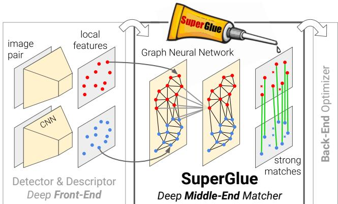
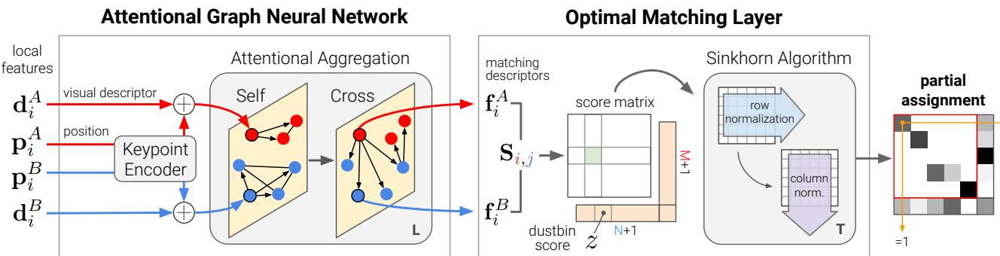
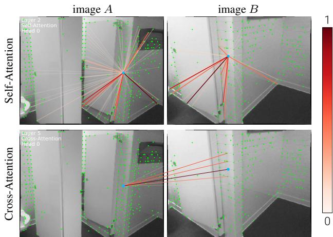

阶段 G · 学习式方法 / Lesson 0129
SuperGlue 2020 · 图神经网络与最优传输做匹配
把「描述子相似就配对」升级成「图神经网络 + 最优传输」——匹配第一次有了「上下文」和「置信度」 🔗
🎯 主题：可学习的中间端（middle-end）匹配
👥 作者：Magic Leap / ETH（Sarlin 等）
📅 2020 · SuperGlue: Learning Feature Matching with Graph Neural Networks
本节目标
读完你应该能：① 说清 SuperGlue 为什么叫「中间端」、它替换了传统流水线的哪一段；② 用生活类比解释 self/cross attention、最优传输、dustbin、Sinkhorn 各自在干什么；③ 讲出那句反直觉结论——「上下文比匹配求解本身更关键」。
和前面课程怎么接
它接续第一季 0004 课的手工特征匹配与数据关联 ——那是 SIFT/ORB 描述子 + 最近邻 + 比值检验的时代。SuperGlue 把这个「匹配/数据关联」环节整个换成了可学习模块，正是第一季 0011 那句「先吃掉匹配」 的第一个重头证据。它也复用SuperPoint（前端检测器+描述子） 的输出，是它直接插入的「前端产物」。
1. 它到底在解决什么：先讲人话
想象两个人在同一间屋子里从不同角度 各拍了一张照片。你的任务是：把左边照片里的「门把手」和右边照片里的「同一个门把手」连起来。手工时代怎么做？先各自找出一些「显著点」（角点、斑点），给每个点算一串数字（描述子），然后「谁的数字最像，谁就是同一个点」，最后再用几何关系（对极几何/单应）把明显错的剔除掉。
这套流程有两个老毛病：① 「最像」是孤立判断 ——一个点在左边很独特，在右边却可能和好几个点都像，单看描述子就会配错；② 「挑错的」是事后补救 （比值检验、几何滤波），不是和匹配一起学的。SuperGlue 的思路是：让所有点「开个会」，互相通风报信，再一起决定谁配谁 ，而且把「这个点可能根本没法匹配」（被遮挡了）也当成一种正式的输出。
cross-attention：判断左右两个圈是同一个「门把手」
图 A（角度一）
门把手
图 B（角度二）
同一个门把手
cross-attention 射线：这两个是同一个点吗？
self-attention：同图里互相看
一个点能看向图里任意位置，不只邻居
这张图在画什么： 左边是 cross-attention（跨图注意力）：SuperGlue 让图 A 的一个点（门把手）向图 B 的所有点「发射」注意力射线，判断哪个才是同一个点。右边是 self-attention（自注意力）：同一张图里，一个点可以和画面任意位置的点交换信息，而不受卷积「只看邻居」的限制。怎么看这张图： ① 注意左边的射线是从 A 的一个点连到 B 的若干候选 ，最终由网络给每条射线一个权重，最重的就是匹配。② 右边的虚线说明 self-attention 能「跳过距离」——这正是 Transformer 相对卷积的优势（LoFTR 那节还会用图专门对比）。要记住的一句话： 注意力让匹配从「孤立比数字」变成「全图一起开会 再决定」，这就是 SuperGlue 上下文感知的来源。
2. 整体定位：一个可学习的「中间端」
作者自己给 SuperGlue 的定位是 middle-end（中间端） ：它夹在「手工或学习的前端（检测+描述，比如 SuperPoint）」和「后端（BA、位姿估计）」之间，专门吃前端吐出来的局部特征，吐出带置信度的匹配。下面这张原文架构图把它的两个大部件画得很清楚。

原图注（Fig. 1）： Feature matching with SuperGlue. Our approach establishes pointwise correspondences from off-the-shelf local features: it acts as a middle-end between handcrafted or learned front-end and back-end. SuperGlue uses a graph neural network and attention to solve an assignment optimization problem, and handles partial point visibility and occlusion elegantly, producing a partial assignment.怎么看这张图： 顺着箭头看——前端先给出两幅图各自的一堆局部特征（点 + 描述子），SuperGlue 在中间把它们「配对」成带颜色的连线，再交给后端做位姿。它明确把自己放在前端和后端「中间」，所以叫中间端。注意图中连线有深有浅，深浅就是后文要讲的置信度。

原图注（Fig. 3）： The SuperGlue architecture. SuperGlue is made up of two major components: the attentional graph neural network (Section 3.1), and the optimal matching layer (Section 3.2). The first component uses a keypoint encoder to map keypoint positions p and their visual descriptors d into a single vector, and then uses alternating self- and cross-attention layers (repeated L times) to create more powerful representations.怎么看这张图： 上半部分是注意力图神经网络 （把位置和描述子融成「会互相看」的表示），下半部分是最优匹配层 （用最优传输求指派）。整条链路端到端可训练，后方还能把梯度回传给 SuperPoint 的描述子。
这句话在说什么： 整条流水线就是「先把每个点的位置 p 和描述子 d 拼成一个向量，让它们经过 L 层注意力互相打磨，得到更聪明的表示 f，最后用一个最优传输层决定谁配谁，并且允许「不配」。
诚实标注一处 OCR 疑点： 原文 Eq.3 的残差更新里，拼接符号被 OCR 识别成了 ⌈·⌉，正确应为方括号拼接 [·,·]（把节点自身特征与邻居聚合结果拼起来再过 MLP）。公式含义（残差 MLP 更新）不受影响，但符号渲染有误，这里按正确形式写出。另，正文 "jointly nding" 是 "jointly finding" 的 OCR 漏空格，已修正。
3. 注意力：让匹配有了「上下文」
传统匹配的「相似度」只看两个描述子本身。SuperGlue 的突破点之一是：先用一个图神经网络（GNN） 把每个点放进「全局上下文」里再算相似度。它用的是多重图（multiplex graph） ：同图内的边是 self-attention，跨图的边是 cross-attention，两者交替跑 L 层。

原图注（Fig. 4）： Visualizing self- and cross-attention. Attentional aggregation builds a dynamic graph between keypoints. Weights $\alpha_{ij}$ are shown as rays. Self-attention (top) can attend anywhere in the same image, e.g. distinctive locations, and is thus not restricted to nearby locations. Cross-attention (bottom) attends to locations in the other image, such as potential matches.怎么看这张图： 上方是 self-attention，一个点的注意力射线可以拉到同图任意位置（不受距离限制）；下方是 cross-attention，射线跨到另一张图去寻找潜在匹配。射线越粗/越亮，代表注意力权重越大。
这句话在说什么： 对每个点，先让它与邻居（同图或跨图）按注意力权重 $\alpha_{ij}$ 做个加权平均，再把「自己的旧表示 + 聚合来的新信息」拼起来过一个小网络，作为新一轮表示。换句话说——每个点不再只代表自己，而是带上了「周围和对方图里谁在关注我」的信息 。
这里 $q,k$ 是把表示投影出来的「查询/键」，点积越大说明越相关。经过 L=9 层这样的打磨，出来的 $f$ 已经不是孤立的描述子，而是「知道全局上下文」的匹配描述子。
4. 代价矩阵 + 最优传输 + dustbin
打磨完表示后，第一步是算一张匹配代价矩阵（相似度矩阵） $S$，其中 $S_{ij}$ 是图 A 第 i 个点和图 B 第 j 个点的相似度。但真正的难点是：怎么把这张表变成一一对应的匹配 ？这正是「指派问题」，而遮挡会让某些点根本没对应。
4.1 代价矩阵：格子深浅表示「像不像」
匹配代价矩阵：每个格子 = 一对点有多像
图A点 ↔ 图B点
B1
B2
B3
B4
B5
A1
A2
A3
A4
A5
0.95
0.10
0.20
0.08
0.05
0.07
0.92
0.06
0.18
0.04
0.09
0.05
0.88
0.07
0.21
0.06
0.08
0.05
0.93
0.06
0.03
0.04
0.02
0.03
0.05
深 = 很像（对角线上的就是真匹配）
中 = 有点像（易误配）
浅 = 不像
A5 整行都浅 → 它被遮挡了
传统「取每行最大值」会硬给它配一个错的
这张图在画什么： 一张 5×5 的相似度矩阵，行是图 A 的点、列是图 B 的点，格子越深表示越像。对角线（A1→B1、A2→B2…）明显最深，是理想的一一对应。但最后一行 A5 整行都浅——它在图 B 里找不到对应，因为被遮挡了。怎么看这张图： ① 深格子集中在对角线，说明「真匹配」本身就写在矩阵里，问题是怎么把它挑出来 。② 浅行 A5 是难点：如果按「每行取最像的」这种朴素规则，A5 会被强行配到一个其实不像的点，制造错误匹配。要记住的一句话： 匹配不是「挑每个点最像的」，而是「在所有点之间找一个整体最合理 的一一对应」——这才是下一步最优传输要解的题。
4.2 最优传输 + dustbin：配不上的就丢进垃圾桶
「整体最合理的一一对应」在数学上叫线性指派问题 。SuperGlue 用一个漂亮的办法处理它，同时顺手解决了遮挡：给图 A 和图 B 各加一个叫 dustbin（垃圾桶） 的虚拟列/行，专门接收「配不上任何人的点」。
最优传输 + dustbin：螺丝拧不进螺孔，就丢进垃圾桶
椅子 A 的螺丝
s1
s2
s3
椅子 B 的螺孔
h1
h2
h3
dustbin
垃圾桶
s3 拧不进任何螺孔 → 丢进 dustbin
绿色 = 成功配对；红色虚线 = 被判定「无匹配」
这张图在画什么： 把匹配类比成「把椅子 A 的螺丝拧进椅子 B 的螺孔」。s1→h1、s2→h2 拧得上（绿线，是真匹配）；s3 这颗螺丝在 B 上找不到对应螺孔，于是被送进 dustbin（红虚线）——表示「这个点不可匹配 / 被遮挡」。怎么看这张图： ① 左边三颗螺丝、右边三个螺孔，看似能一一对应，但现实中可能有螺丝多出来（遮挡、视野差异）。② dustbin 是一个虚拟兜底列 ，让最优化问题可以合法地「不匹配」某些点，而不是硬配。这就是所谓 partial assignment（部分指派） 。要记住的一句话： dustbin 是 SuperGlue 处理「遮挡/不可见」的妙招——它把「配不上」变成一种正式、可学习的输出 ，而不是事后再删。
这句话在说什么： 相似度矩阵就用两个匹配描述子的内积 $S_{ij}$（注意 SuperGlue 的 $f$ 没做归一化，所以内积的大小本身就带着「有多自信」的意思）。下面那个加框的 $\bar S$ 是在右下角塞进一个 dustbin：给 A、B 各追加一行/一列，用同一个可学习参数 $z$ 填满，代表「不匹配」的代价。
5. Sinkhorn 迭代：把「互检」变成可微的求解
有了带 dustbin 的矩阵 $\bar S$，怎么求最优指派？SuperGlue 用 Sinkhorn 算法 ——一种交替归一化的迭代法，把「每行、每列都大致和为 1」的软分配逼出来。它是熵正则化最优传输的近似，关键是全程可微 ，所以能塞进神经网络一起训练。
Sinkhorn：在「按行归一」和「按列归一」之间来回摆
① 原始 exp(S̄)
7.4 1.0
1.0 20.1
行和≠1,列和≠1
② 按行归一
0.88 0.12
0.05 0.95
每行和=1 ✓
③ 按列归一
0.95 0.11
0.05 0.89
每列和=1 ✓
反复「行↔列」来回，直到两边都为 1
按行
按列
SuperGlue 跑 T=100 次 → 软分配 P̄ → 丢掉 dustbin 得到 P
这张图在画什么： ① 先对 $\exp(\bar S)$ 取一个 2×2 的小例子；② 第一次「按行归一」让每行和变成 1；③ 再「按列归一」让每列和变成 1。但这样一轮之后行和又不是 1 了，所以要在行、列之间反复横跳，直到两边几乎都是 1——此时矩阵就接近一个「每行每列只有一个重、其余接近 0」的指派。下方法则图把这种来回画成天平的左右摆动。怎么看这张图： ① 注意矩阵里的数字只是示意 （展示「行和=1 / 列和=1」的收敛趋势，非真实数值）。② 关键是这个迭代全程可微 ，所以梯度能一路反传到前面的注意力网络——「互检」不再是后处理，而是训练的一部分。③ SuperGlue 跑 T=100 次迭代，最后丢弃 dustbin 列得到最终匹配 $P$。要记住的一句话： Sinkhorn 用「行、列交替归一化」这样一种优雅又省事的迭代，把 NP 难的离散指派松弛成可微的连续优化 。
这句话在说什么： 对指数化的相似度矩阵做 Sinkhorn 迭代得到软分配 $\bar P$；最后的约束 $P\cdot\mathbf 1_N \le \mathbf 1_M$ 就是「图 A 的每一个点至多 配图 B 的一个点」（允许不配，因为可以进 dustbin）。这就是原文 Eq.1 的问题定义。
6. 置信度与实验结论
SuperGlue 给每个匹配都带一个置信度 。低于阈值（实现里取 0.2）的连线直接丢弃。这正是第一季 0004 讲「数据关联」时想要的、却只能靠几何滤波事后补的东西——现在它成了匹配层原生 的输出。
置信度：绿=保留，黄=存疑，红=丢弃
绿：高置信 → 保留进 BA
黄：中等置信 → 可犹豫
红：低置信（<0.2）→ 直接丢弃
这张图在画什么： 两幅图之间的匹配连线被按置信度分成三档：绿色高置信保留、黄色中等存疑、红色低置信（低于 0.2 阈值）直接丢弃。这对应 SuperGlue 输出的 confidence。怎么看这张图： 传统流程里「红/黄」这种错配要靠几何滤波（RANSAC）事后发现；SuperGlue 在匹配层就给出了「我有多确定」的信号，后端可以据此加权或直接剔除。要记住的一句话： 置信度让匹配从「给一组硬配对」升级成「给一组带可信度的 配对」，后端 BA 用起来稳得多。
6.1 几个关键数字（来自正文 Table 1–4）
测试
SuperGlue（SuperPoint+）
对照
Homography AUC RANSAC 53.67 / DLT 65.85 NN+OANet 仅 44.55 / 52.29 室内 ScanNet AUC@20° 51.84 NN+ratio 明显更低 室外 PhotoTourism AUC@20° 64.16 — 消融：去掉 GNN 掉到 38.56 全模型 9 层 = 51.84 实现开销 D=256, L=9, 12M 参数, 69ms（GTX1080, 15FPS） keypoint>500 时因二次复杂度偏慢
最反直觉的结论： 消融实验里，把整个 GNN 去掉、只留最优传输层，AUC@20° 仍有 38.56；一旦把 GNN 加回来就跳到 51.84。作者据此认为——「上下文聚合」比「匹配求解本身」更关键 。这和下一节 LoFTR、以及再后面 SiLK「不用上下文也能打」形成了有趣的张力。
互动判断
关于 SuperGlue 的 dustbin，下面哪种说法最准确？
dustbin 让模型能正式输出「这个点不配任何点」
dustbin 是 SuperGlue 用来加速匹配的主要手段
6.2 和前面课程怎么接（再强调）
这一节是第一季 0011 那句判断的头号证据 ：匹配这个环节，确实被「先吃掉了」。它替换的是第一季 0004 讲的「描述子相似度匹配 + 比值/互检 + 几何滤波」整段，变成一个可插入 SfM/SLAM 的 middle-end。但它也留下一条线——它仍然依赖 SuperPoint 这类前端，且对关键点数量是二次复杂度，这正是后面 LoFTR（去掉检测器）和 SiLK（极简前端）要补的短板。
课后练习
用生活类比解释：为什么 SuperGlue 的匹配比「谁描述子最像就配谁」更稳？
展开查看答案
「谁最像就配谁」像每个人闭门造车、只看自己的小抄。SuperGlue 先让所有点「开会」（self/cross attention），每个点都知道了「周围和对方图里谁在关注我」，再一起决定配对。这样 A 图里一个在 B 图里其实和好几个点都像的点，会被全局上下文「劝退」错配。本质是把孤立判断变成全局协商 。
dustbin 解决了传统匹配的哪个具体痛点？请结合 4.1 节那张代价矩阵里的 A5 行说明。
展开查看答案
传统「取每行最像的」规则，遇到 A5 这种整行都浅（被遮挡、在 B 里找不到对应）的点，会硬配一个其实不像的点，制造错误匹配。dustbin 提供了一个虚拟「不匹配」出口，让最优化可以合法地输出「A5 不配任何人」，变成 partial assignment，从而不制造假匹配。
为什么 Sinkhorn 对 SuperGlue 很重要？如果改用「每行取 argmax」会丢掉什么？
展开查看答案
Sinkhorn 是可微 的——它用行/列交替归一化逼近软指派，整条链路梯度能反传到注意力网络，让「互检」成为训练的一部分。若改用每行 argmax，虽然快，但不可微、丢失了软置信度 ，也无法让「一对多 / 无匹配」这种结构自然涌现，训练就断了。
作者说「上下文比匹配求解本身更关键」，证据是什么？这个结论对本季后面哪几节构成了张力？
展开查看答案
证据来自消融：去掉 GNN 只留最优传输层仍有 38.56 的 AUC@20°，加上 GNN 才到 51.84——增益几乎全来自上下文聚合。这与0130 LoFTR （用全局注意力替代局部共识）一脉相承，但与0133 SiLK （明确声明「不用 context aggregation」、仅靠余弦相似度+MNN 也能有竞争力）构成直接张力——SiLK 认为「这些任务未必需要上下文聚合」。